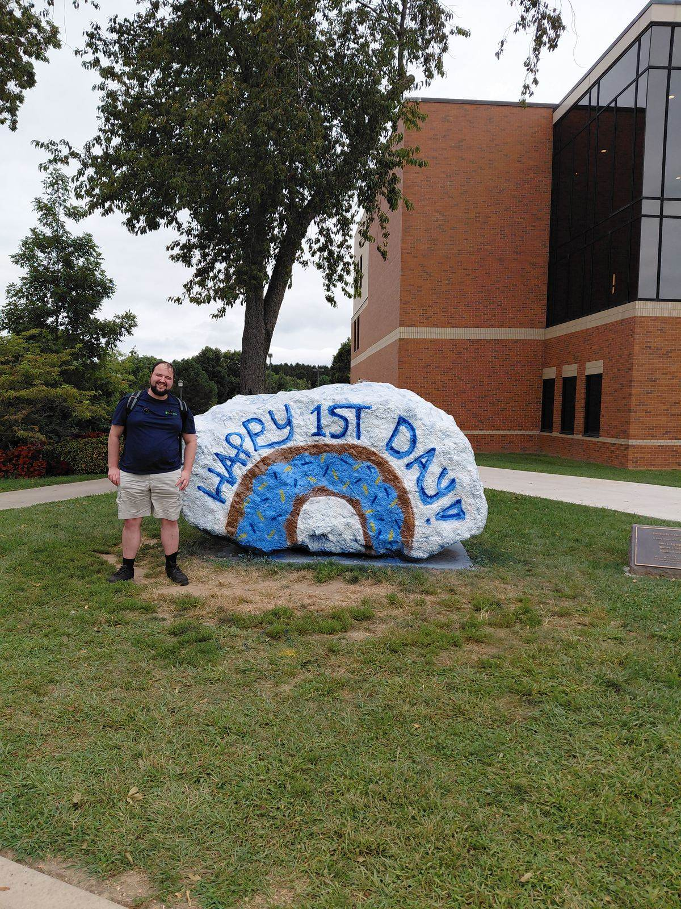
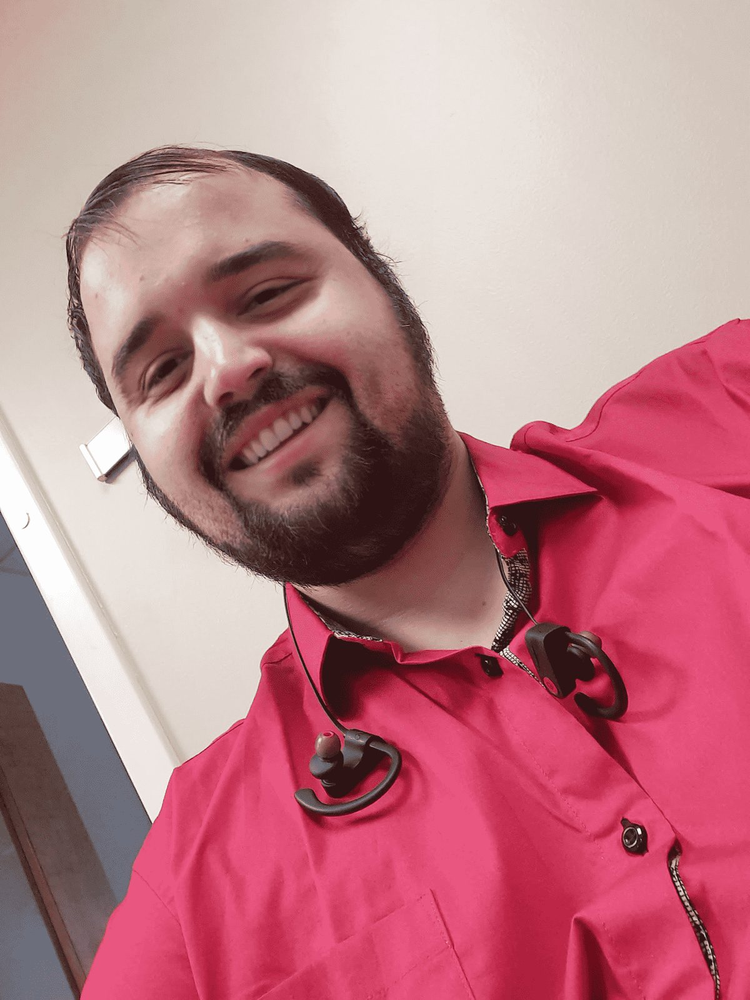

Content and Media Management
Bernard Keister VI
Aspiring to build media of today for a better tomorrow.
About
Five years in, still learning
My name is Bernard Keister VI. I have been in content and media creation for the last five years, and I am studying Live Production at Cedarville University. I fell in love with media when I was very young. I fell in love with creation about six years ago.
I took a leap and asked a friend online whether they needed someone to edit their videos. They said yes. That is where my love of creating content, and of bringing laughter and joy to a wider audience, began.
I have been a student at Cedarville since the fall of 2025. I plan to absorb as much knowledge as I can, and to use the gifts I have been given as well as I am able.


Structure
Three areas of practice
The portfolio is organized so a visitor can see the direction immediately. Each area is visible now, even where the work is still being added.
Selected work
Sugar Shockers
Sugar Shockers is a satirical audio commercial created for my Audio Production class. I recorded the vocals, added sound effects, mixed and edited the piece in Pro Tools, and bounced the final edit. The piece shows voice recording, sound design, audio mixing, and storytelling through sound.
- Role
- Record, design, mix, and edit
- Tools
- Pro Tools
- Context
- Audio Production class
01
Content Creation
Personal and academic pieces will be collected here as they are finished.
02
Live Production
Live events and streaming work will be documented here.
03
Videography
Shoots and finished edits will be added here.